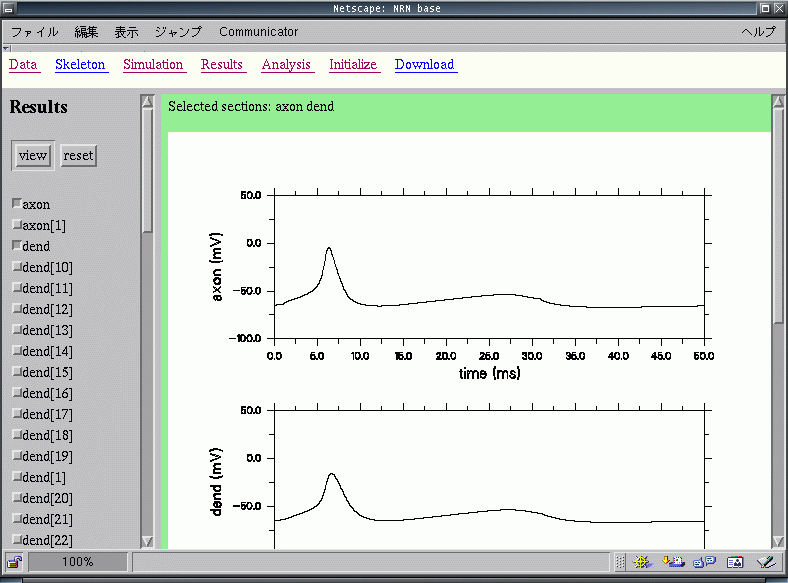

Mathematical model of neural network for the insect brain
Hidetoshi Ikeno
School of Humanities for Environmental Policy and Technology,
Himeji Institute of Technology
e-mail: ikeno@hept.himeji-tech.ac.jp
URL: http://webee.hept.himeji-tech.ac.jp/
Goal of this study is to understand the functional mechanisms for
sensory signal processing and behavioral control in a small brain of
honeybee. Many investigations on honeybee behavior and neural
mechanisms have been done during this century. Mathematical models for
cellular, neural network and behavioral mechanisms will be presented
in this study. These models will be implemented on the simulation
server and can be accessed through the web browser.
We are constructing models of honeybee in harmony with bottom-up
(cellar to network) and top-down (behavior to network) approaches.
- behavioral changes of conditioning by using associated visual or
olfactory stimulus would be a suitable paradigm to investigate the
neural mechanisms for acquisition of sensory signals and controlling
honeybee behavior. in recent years, ionic current properties of
neurons in the insect brain have been measured by the patch-clamp
technique on an isolated cell. on the other hand, spatio-temporal
properties of neural network responses have also been shown by the
optical recording and multi-channel recording methods. in order to
reveal the mechanisms and functions of neuron and neural network of
honeybee, we are integrating results and knowledge from these
experiments, and building a mathematical model.

29k PNG image
Click to zoom up
- In the hive, honeybee's behavior is changed by her age and and other
sensory inputs. Worker, queen and drone's behaviors in the hive have
been observed and recorded by single-individual trailing (SIT)
method. Behavioral patterns of honeybee are categorized in about 150
based on the position and movement of body parts. We describe the
behavioral sequence in SIT data as a mathematical model. It is
expected to get the neural network model for generating honeybee
behavior, because behavior would be reflecting the changing of
activity in the nervous system.